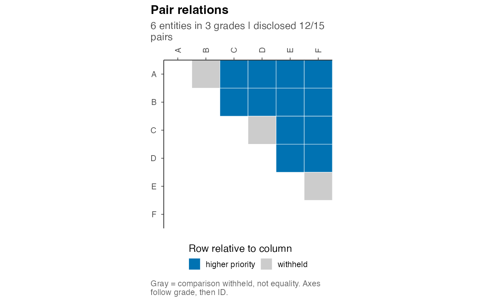
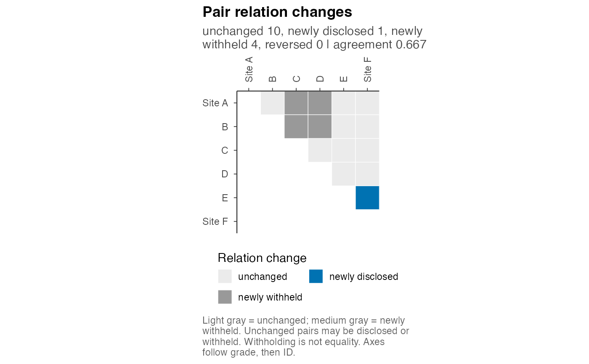

Plot Disclosed Comparisons or Their Changes
postrank_plot_relations.RdThe matrix displays the pairwise directions disclosed or withheld by a
grading. When a second report is supplied, each relation is classified as
unchanged, newly disclosed, newly withheld or reversed. The tiles represent
selected actions. Posterior comparison probabilities are displayed
separately by postrank_plot_pairwise().
Usage
postrank_plot_relations(
x,
y = NULL,
labels = c("auto", "ids", "none"),
...,
entity_labels = NULL
)Arguments
- x
A
postrank_fit,postrank_analysis,postrank_baseline, or a complete named integer grade vector. Grade 1 has highest priority.- y
Optional second fit, analysis, baseline or named grade vector on exactly the same entities. Changes run from
xtoy.- labels
"auto"shows IDs or display names for at most 15 entities when every label has at most 20 characters; otherwise it shows positions in grade order."ids"always shows the labels."none"hides ticks and axis labels. Increase the canvas size when explicitly showing many IDs.- ...
Unused.
- entity_labels
Optional partial named character vector mapping raw entity IDs to display names. Unmapped IDs keep their text. Names are wrapped on explicit ID axes and never alter data or ordering. Supply this argument by name.
Value
A ggplot object. If either fitted object lacks a validated grade,
a status panel explains which result is unavailable.
Details
Both axes follow the first object's grade, then raw entity ID. Only the upper triangle is drawn, so every unordered pair appears once. In a single-report view, gray means that the comparison is withheld. A shared grade does not assert latent equality.
In a change map, light gray means unchanged and medium gray means newly
withheld. Unchanged includes pairs that were disclosed in the same direction
and pairs withheld by both reports. Agreement uses all M = choose(n, 2)
pairs. A relation change is not itself a loss improvement: reports from
different policies need evaluation under a common loss for a risk comparison.
The function reads grades and does not solve or calculate new posterior scores.
Examples
# Read prepared tutorial results; no model fitting or optimization.
source(system.file("scripts", "_vignette-setup.R", package = "postrank"),
local = TRUE)
one <- load_or_compute("tutorial_one")
postrank_plot_relations(one)

Open full-size figure
two <- load_or_compute("tutorial_two")
postrank_plot_relations(one, two, labels = "ids",
entity_labels = c(A = "Site A", F = "Site F"))

Open full-size figure